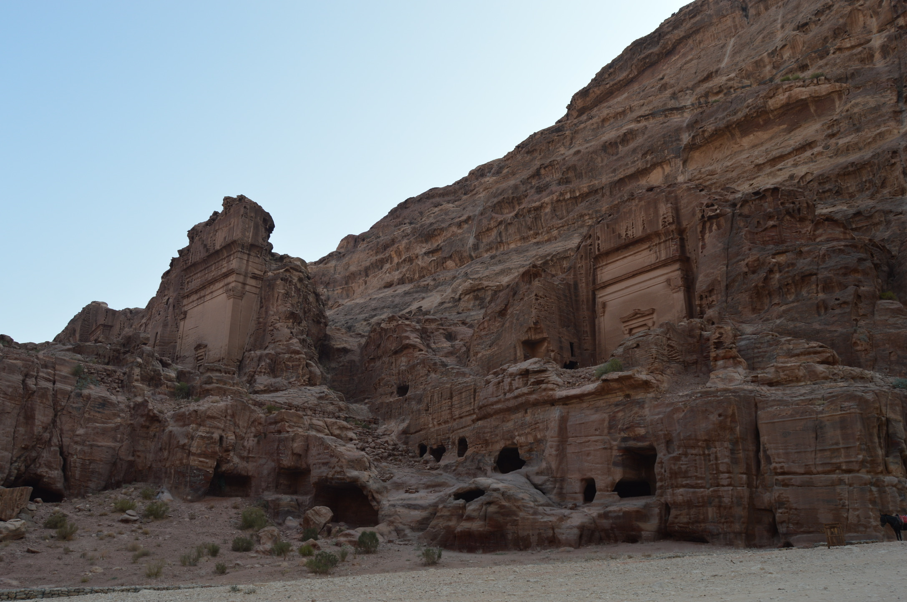

Les ruines de l'Acropole, au cœur d'Amman, capitale de la Jordainie
Les ruines de l'ancienne Jérash

La Route du Roi, Jordanie. Vue vers le sud, entra Amman et Pétra
Temples creusés dans les falaise, Pétra, Jordanie

Le monastère qui se trouve à 40 minutes de montée de Pétra